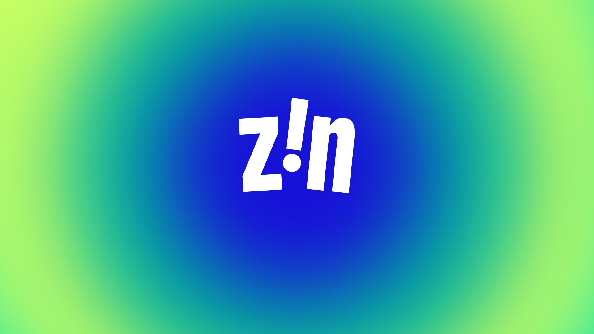
Context
KRO NCRV had een digitaal contentplatform dat dagelijks publiceert op YouTube, Instagram en Facebook — maar nog geen eigen gezicht. De redactie werkte hard, maar elke aflevering zag er net iets anders uit.
Probleem
Zonder visuele taal was elk stuk content een vluchtige impressie. Niets bleef hangen, niets bouwde op. De redactie kon niet zelfstandig verder — voor elk nieuw format moesten ze terug naar een bureau.
Inzicht
Een merk is pas sterk als het team het zelf kan bedienen. Niet alleen keuzes vastleggen — maar ze inbouwen in tools die de redactie dagelijks gebruiken.
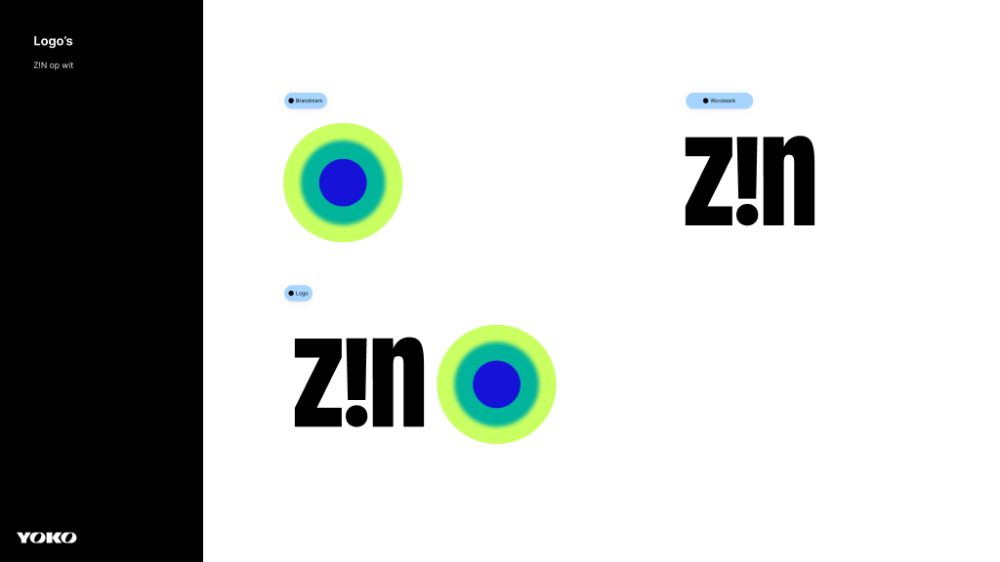
Oplossing
Uit workshopsessies destilleerden we de kern: verhalen over betekenis, verbinding en het goede leven. De naam Z!N viel direct op zijn plek. Zin hebben. Ergens zin in vinden. En ja, ook gewoon: zin.
Daarna de volledige identity: kleurenpalet met vier primaire gradients, typografie (PP Formula Condensed), subbrands per format, en templates in Figma en Premiere.
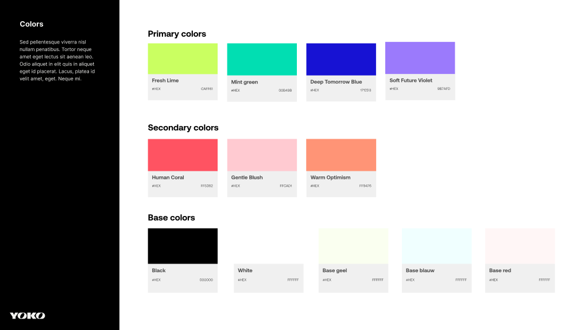
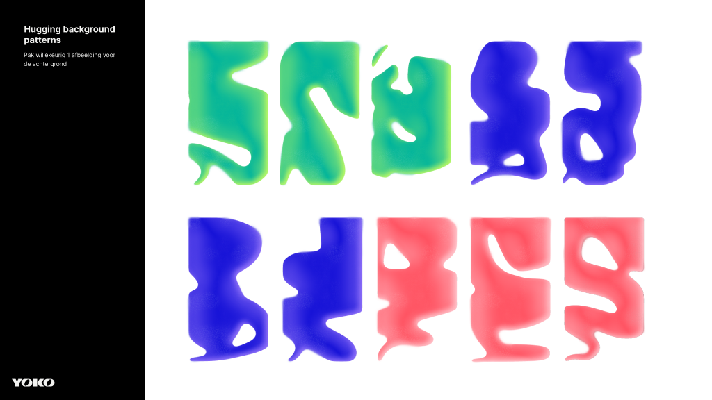
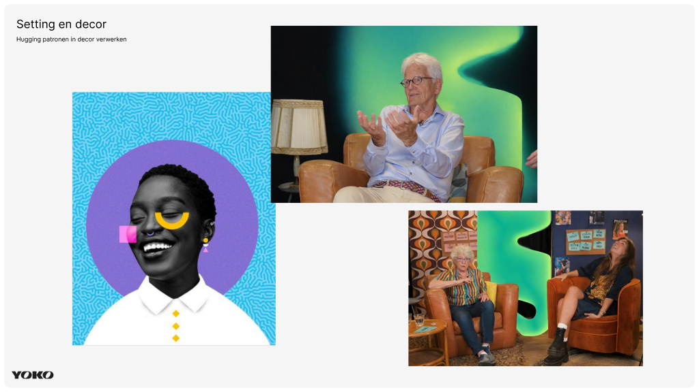
Uitwerking
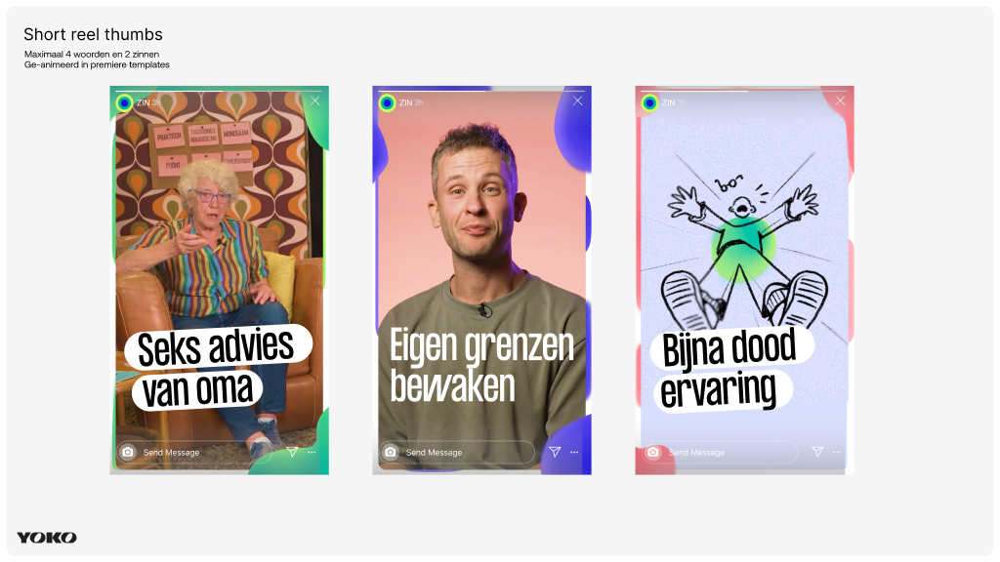
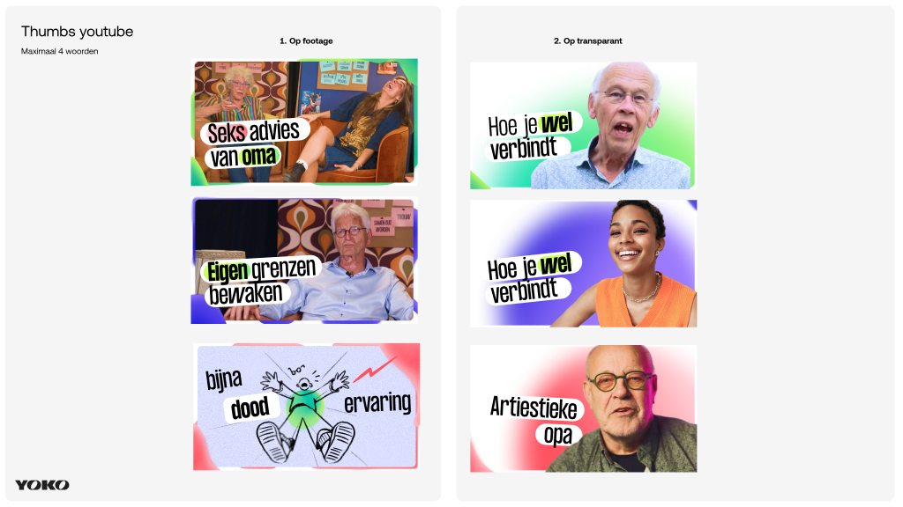
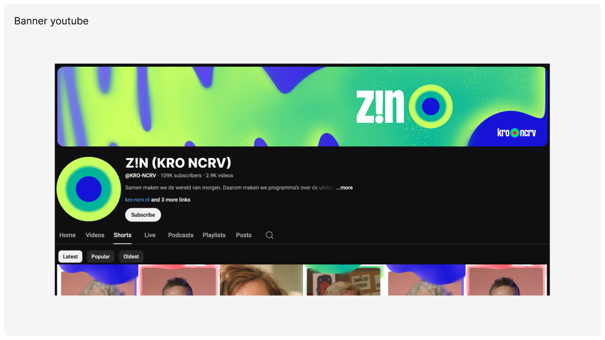
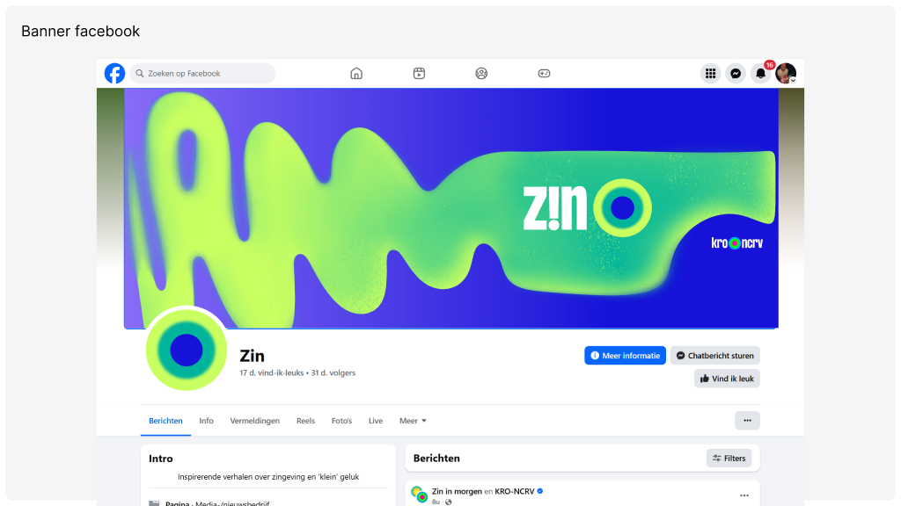
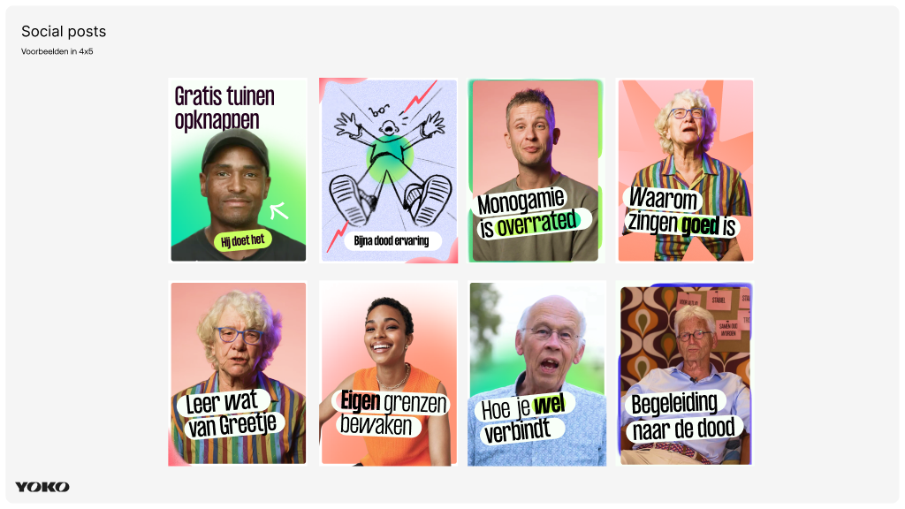
Resultaat
Het merk staat live. Z!N publiceert dagelijks op YouTube, Instagram en Facebook. De redactie maakt zelfstandig alle visuele content — van thumbnail tot banner. Wat ooit losse afleveringen waren, heeft nu een gezicht dat blijft.
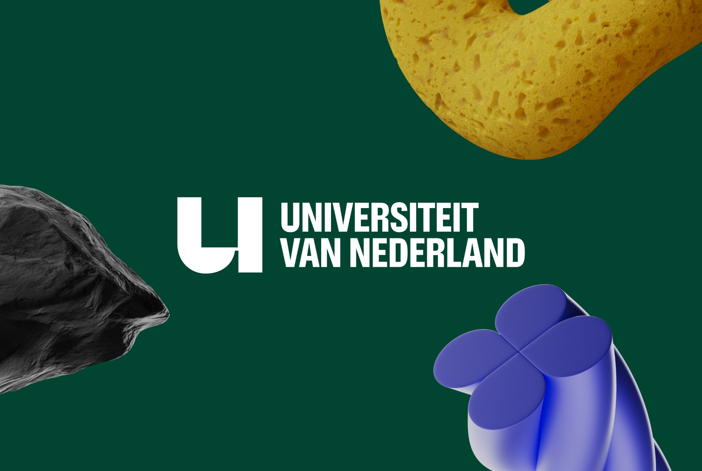
Next project